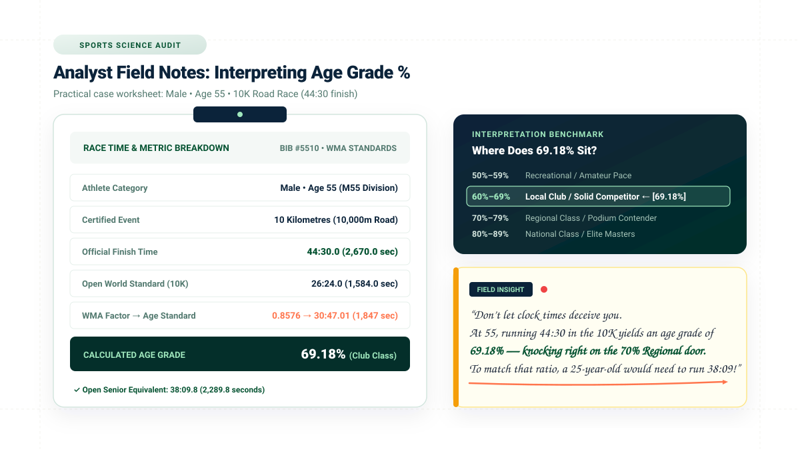
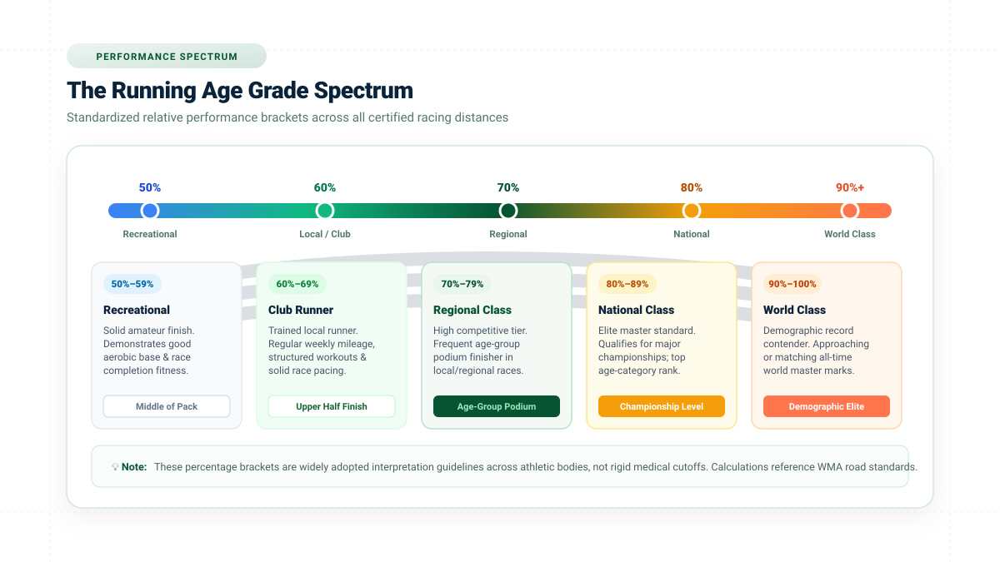
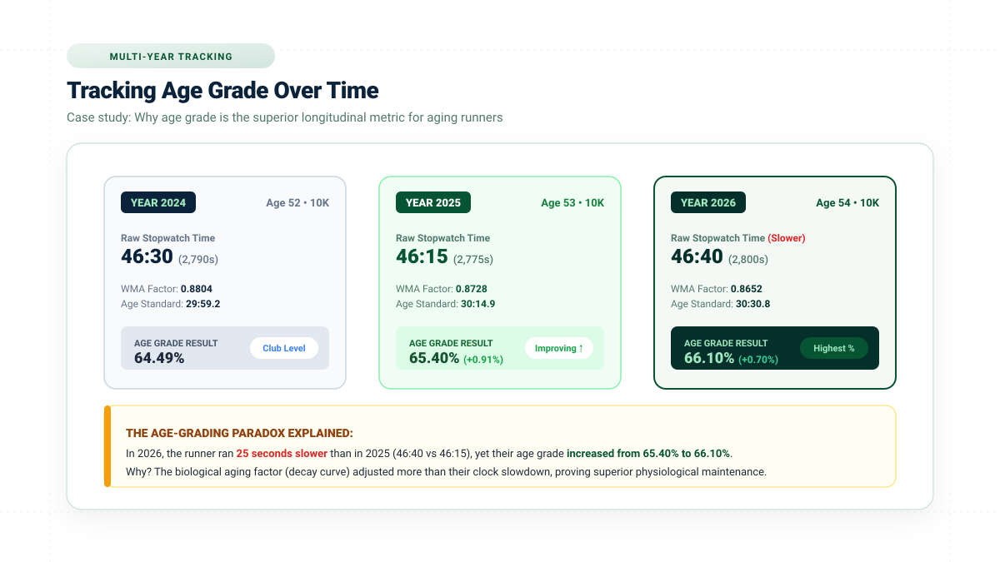
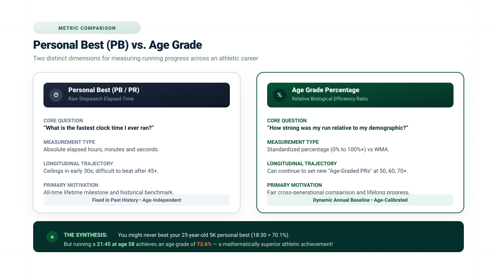

What Is a Good Age Grade in Running? Direct Answer
There is no single universal cutoff that automatically defines a “good” runner in every situation. In general running practice, an age grade between 60% and 69% is considered a solid, competitive club-runner standard, while 70% to 79% represents regional competitive caliber, and 80% or higher reflects national-class performance.
Because age grading measures your finish time relative to the world reference standard for your exact age and sex, a higher percentage always reflects a closer proximity to world-record caliber for your demographic cohort. However, the exact meaning of a specific number must always be evaluated in the context of the underlying calculation methodology, certified course profile, and race conditions.
If you want to discover your own percentage, enter your age, sex, certified distance, and chip time into our Age Grading Calculator.
What Is a Good Age Grade in Running?
When runners ask whether their age grade is good, they are usually trying to answer a practical question: “How does my finish time compare to other runners once our age and biological differences are taken into account?”
Unlike raw stopwatch times, which heavily favor 22-year-olds at the peak of natural aerobic capacity, an age-grade percentage places every runner on a standardized 0% to 100%+ continuum. In this framework:
- Age grade is a relative performance measure: It does not measure your absolute clock time in isolation; it measures the ratio between your finishing speed and the world-standard benchmark for someone of your exact age and sex.
- Higher percentages reflect stronger relative performance: An age grade of 68% represents a mathematically stronger athletic effort than 58% under the same methodology and event conditions.
- “Good” is subjective unless defined by competitive categories: A recreational marathoner completing their first race may view 52% as a major triumph, whereas an experienced club runner might target 70% for regional podium contention.
- Methodology and distance matter: Comparing an age grade computed under World Masters Athletics (WMA) road factors with an ad-hoc track formula or cross-country trail result can yield misleading comparisons.
Core Interpretation Principle
There is no universal age-grade percentage that automatically defines a “good” runner. Age grade is a comparison against a demographic reference standard, so interpretation must always consider the methodology, event distance, course topography, and competitive context.

How Should You Interpret an Age Grade Percentage?
To interpret your percentage accurately, it helps to understand the underlying continuum that age-grading algorithms establish:
LOWER % (e.g. 45%–55%) ➔ Further from theoretical world demographic standard
HIGHER % (e.g. 75%–85%+) ➔ Closer to theoretical world demographic standard
While the percentage provides a rigorous mathematical reflection of race speed relative to historical benchmarks, it is equally vital to understand what the score does not measure:
- It does not measure general health: A runner with a 55% age grade who trains three days a week may possess outstanding cardiovascular biomarkers, balanced blood pressure, and exceptional joint health.
- It does not measure total athletic capability: Age grading evaluates running velocity over certified distances; it does not measure mobility, muscular strength, agility, or power.
- It does not predict future potential: A novice runner scoring 50% in their debut 5K may possess the aerobic ceiling to achieve 68% after eighteen months of progressive, structured coaching.
Relative Standard, Not Complete Fitness
Age grade tells you how an individual race performance compares with an empirical reference standard; it does not provide an exhaustive assessment of a person’s overall physical health or fitness.
Methodology Consistency is Crucial
Because different scoring software may reference different WMA table editions (such as 2015, 2020, or 2025 updates), always ensure you compare scores calculated using the identical underlying dataset.

Age Grade Percentage Chart
Athletic organizations, masters running clubs, and race directors widely utilize the following benchmark tiers to interpret age-grade results across road racing events:
| Age Grade Range | General Interpretation | Athletic & Competitive Context |
|---|---|---|
| 90.00% – 100%+ | World Class | Demographic world-record contender; matches or approaches all-time international standards for that age and sex. |
| 80.00% – 89.99% | National Class | Elite masters standard; qualifies for national championships and consistently contends for overall age-category titles. |
| 70.00% – 79.99% | Regional Class | Highly competitive club runner; frequently finishes on the age-group podium in competitive local and regional road races. |
| 60.00% – 69.99% | Local / Club Standard | Well-trained runner performing well above median field averages with consistent structured mileage and pacing. |
| 50.00% – 59.99% | Recreational / Amateur | Solid foundational performance; demonstrates sustained aerobic endurance and race-distance completion fitness. |
| Below 50.00% | Novice / Participation | Beginning runners, walk-run participants, or athletes returning from injury establishing baseline endurance. |
Important Interpretation Note: These percentage descriptions are intended as general interpretation guidance, not universal official performance categories. The exact meaning depends on the reference methodology, course elevation profile, weather, and athlete experience.
What Does a 50% Age Grade Mean?
A 50% age grade indicates that an athlete's finishing time corresponds to approximately half of the applicable demographic reference standard ratio under the calculation formula. In mathematical terms, your finish duration was twice as long as the theoretical world standard for someone of your exact age and sex.
It is crucial to avoid misinterpreting 50% as “bad” or failing:
- It does not mean failing: In school examinations, 50% may represent a borderline grade, but in athletic age grading, 100% represents a literal world record. Running at half of world-record pace over 5K, 10K, or a marathon requires genuine physical conditioning.
- It reflects solid amateur stamina: Completing a 10K road race at a 50% standard requires maintaining continuous aerobic running output without walking, demonstrating substantial cardiovascular resilience.
- It provides an honest baseline: For newcomers to endurance sport, achieving 50% marks a key developmental milestone from which structured training will yield steady upward progress.
What Does a 60% Age Grade Mean?
A 60% age grade represents a noticeably stronger relative performance than the 50% tier and serves as the widely recognized benchmark of an established, trained club runner.
When an athlete crosses the 60% threshold, it usually signifies:
- Structured training consistency: Reaching 60% rarely happens by accident on casual, sporadic running. It reflects regular weekly training volume, long runs, and purposeful pacing.
- Upper-half race placement: In mass-participation community 5K and 10K races, runners scoring 60% typically finish well within the top half of the total field.
- Clear athletic progression: Moving from 52% to 61% over a two-year training cycle demonstrates physiological adaptation and improved lactate threshold management.
What Does a 70% Age Grade Mean?
A 70% age grade is considered an advanced athletic standard, denoting regional-class competitive performance. Achieving 70% means you are running at 70% of the world-record speed ratio for your exact demographic cohort.
Key characteristics of the 70% bracket include:
- Frequent age-group podium finishes: Runners who achieve 70%+ routinely take first, second, or third place in their 5-year age division at local and regional races.
- Rigorous training regimen: Athletes at this level typically run 35 to 60+ miles per week, incorporate dedicated interval training, prioritize recovery and nutrition, and race tactically.
- High athletic commitment: In many amateur running clubs, runners scoring between 70% and 75% represent the core scoring squad for cross-country and road leagues.
What Does an 80% Age Grade Mean?
An 80% age grade marks the transition into national-class competitive caliber. This is an elite amateur tier reached by fewer than 2% of active race participants.
Athletes achieving an 80% age grade exhibit:
- Championship-level competitive standard: An 80% score routinely meets qualifying standards for major events, including preferred seed starts at World Marathon Majors (such as Boston, London, and Chicago).
- Exceptional demographic performance: At age 60, achieving an 80% age grade in the 5K requires running approximately 19:50—a pace that would challenge runners thirty years younger.
- Strict methodology requirement: At this level of precision, minor discrepancies in course certification or table versions become meaningful; performance must be verified on certified courses.
What Does a 90% Age Grade Mean?
A 90% age grade is an extraordinarily rare, world-class athletic milestone. Performing at or above 90% indicates that an athlete is operating within 10% of the fastest speed ever recorded by any human of their exact age and sex in modern history.
Runners in this stratosphere compete for world masters championship medals, set national masters records, and frequently beat younger open-division fields outright. A score of 100% equates to matching the world demographic standard, while scores exceeding 100% indicate that a runner has surpassed the existing reference standard, signaling a potential new world-record benchmark.
Is a Higher Age Grade Always Better?
When comparing performances evaluated under the identical calculation methodology and across comparable racing circumstances, a higher age-grade percentage does indeed indicate superior relative athletic output. However, treating percentages as absolute rankings without context can lead to misleading conclusions due to several critical nuances:
- Different course topographies: A 65% age grade achieved on a brutally hilly trail course with 300 meters of elevation gain often represents a harder physiological effort than a 68% recorded on a pancake-flat road circuit.
- Environmental weather conditions: Racing in 28°C (82°F) heat with high humidity impairs cardiac output and blood plasma volume, slowing race times by 4% to 8%. The algorithm does not adjust for temperature or headwind.
- Table edition variances: A runner scored with WMA 2015 tables may receive a slightly different percentage than when evaluated under WMA 2020 or 2025 revisions, as world records evolve.
- Health vs. Speed: Higher running velocity does not automatically equal greater longevity or medical wellness. Age grade measures athletic output, not clinical health.
Same Methodology Rule
Always compare age grades generated by the same dataset version. Cross-comparing scores from different calculator engines can produce artificial gains or drops.
Contextual Analysis
Evaluate your score alongside race weather, elevation gain, and pacing execution rather than judging your athletic worth purely by the final decimal point.
Does Age Affect What Counts as a Good Age Grade?
One of the most elegant aspects of age grading is that biological age is already built directly into the mathematical baseline. Because the reference benchmark time automatically lengthens as chronological age increases, a 65% age grade carries an equivalent athletic meaning whether you are 28, 48, or 68 years old.
Consider two different athletes running the same certified 10K road race:
| Runner | Age & Sex | Chip Finish Time | WMA Standard | Calculated Age Grade | Athletic Caliber |
|---|---|---|---|---|---|
| Runner A | Female, Age 26 (Senior) | 44:30 (2,670 sec) | 29:43.0 (1,783 sec) | 66.78% | Solid Club Standard |
| Runner B | Female, Age 58 (Master) | 52:15 (3,135 sec) | 35:01.2 (2,101 sec) | 67.02% | Solid Club Standard |
Even though Runner A crossed the finish line nearly eight minutes ahead of Runner B on the clock, both achieved an almost identical ~67% age grade. Age grading successfully isolated their relative physiological achievements, removing the chronological disparity.
Does Race Distance Affect Age Grade?
Yes. Every certified race distance—from 5K and 10K to the Half Marathon and Marathon—maintains its own distinct reference standard curve derived from masters world records at that specific distance.
As a consequence:
- Runners possess unique physiological profiles: An athlete with high fast-twitch fiber distribution may score 72% in a 5K but manage only 63% in a marathon due to glycogen depletion and muscular fatigue.
- Endurance specialists favor longer distances: Conversely, ultra-endurance runners who excel at fat oxidation may achieve higher age grades in the half marathon and marathon than in short, high-lactate 5Ks.
- Do not assume cross-distance uniformity: While age grading allows you to compare different events conceptually, your percentage across distances will naturally vary based on your training focus and physiological strengths.
Can You Compare Your Age Grade Over Time?
Tracking your age grade across multiple years is perhaps the single most rewarding application of the system. In standard stopwatch running, older athletes inevitably face the frustrating reality of natural biological slowdown—even when training harder than ever.
By tracking age grade, however, you can monitor whether your fitness is improving relative to the biological aging curve. Consider the following 3-year progression for a runner named Mark between ages 52 and 54:
| Racing Year | Age | Event | Clock Finish Time | WMA Factor | Calculated Age Grade | Trend Analysis |
|---|---|---|---|---|---|---|
| Year 2024 | 52 | 10K Road | 46:30 (2,790 sec) | 0.8804 | 64.49% | Baseline Club Standard |
| Year 2025 | 53 | 10K Road | 46:15 (2,775 sec) | 0.8728 | 65.40% (+0.91%) | Faster clock & higher % |
| Year 2026 | 54 | 10K Road | 46:40 (2,800 sec) | 0.8652 | 66.10% (+0.70%) | Slower clock, but HIGHEST % |
In 2026, Mark ran 25 seconds slower on the stopwatch than he did in 2025 (46:40 vs 46:15). Yet his age grade increased from 65.40% to 66.10%! Because the biological aging factor accounted for a 36-second natural demographic slowdown, Mark’s actual physiological maintenance outpaced chronological aging. Age grading revealed what the stopwatch obscured.

Age Grade vs Personal Best: Two Different Dimensions
Many runners wonder how to balance chasing an all-time Personal Best (PB / PR) with tracking their age-grade percentage. These two metrics serve fundamentally different roles in your athletic career:
| Dimension | Personal Best (PB / PR) | Age Grade Percentage |
|---|---|---|
| Core Question | “What is the fastest clock time I ever recorded?” | “How strong was my performance relative to my age and sex?” |
| Metric Type | Absolute elapsed hours, minutes, and seconds. | Standardized percentage ratio (0% to 100%+). |
| Career Trajectory | Peaks during 20s or early 30s; difficult to beat after 45+. | Can continually reach new “Age-Graded PRs” at 50, 60, 70, and beyond. |
| Cross-Runner Comparison | Favors younger competitors and male demographic baselines. | Completely neutral across all ages, genders, and generations. |
| Primary Utility | Historical career milestone and lifetime record. | Ongoing annual motivation and realistic multi-year fitness tracking. |

Age Grade vs Age-Group Position
In race results, runners often see both an age-group position (e.g. 4th of 82 in M50–54) and an age-grade percentage (e.g. 68.42%). While both account for age, they reflect different competitive mechanisms:
- Age-Group Position is Relative to Race Attendance: Placing 2nd in your age group simply means you beat all but one person who decided to register and show up on that specific morning. In a small local race with 15 competitors, an ordinary run might earn a medal. In a major metropolitan marathon with 3,000 runners per age bracket, a stellar performance might only place 45th.
- Age Grade is an Absolute Standard: Your 68.42% age grade evaluates your time against an objective, verified historical standard derived from world records. It remains identical whether you ran against five runners or fifty thousand.
What Can Affect Your Age Grade?
Your calculated age grade is influenced by multiple technical, physiological, and environmental factors:
Race Finish Time
Every second shaved off your chip finish time directly elevates the numerator/denominator ratio, increasing your calculated percentage.
Chronological Age
The reference benchmark time increases with age. As you enter a new single-year age bracket, your demographic target time adjusts accordingly.
Event Distance
Different certified distances maintain unique physiological decay factors. A runner’s aerobic strengths will show varying scores between 5K and marathon.
Biological Sex
Male and female benchmark tables reflect physiological baselines in aerobic capacity and world records, ensuring balanced evaluation.
Course Topography
Severe elevation gain, sharp turns, and uneven trail surfaces reduce raw speed, resulting in lower scores compared to certified flat courses.
Weather & Climate
Excessive heat, humidity, high altitude, and strong headwind impair oxygen delivery, reducing raw finish times without algorithm adjustment.
How to Improve Your Age Grade
Improving your age grade requires systematically enhancing your running performance relative to your demographic reference baseline. Rather than relying on sudden training spikes, sustained age-grade improvement is built on sound endurance principles:
- Build Consistent Aerobic Volume: Aerobic base mileage expands mitochondrial density and capillary networks. Gradually accumulating consistent weekly mileage at a conversational pace is the foundation of endurance improvement.
- Targeted Lactate Threshold Work: Incorporating weekly tempo runs and cruise intervals (typically 20 to 40 minutes at comfortably hard effort) raises the pace you can maintain before rapid lactic accumulation.
- Prioritize Sleep and Recovery: For masters runners, recovery is when physiological adaptation occurs. Adequate sleep, balanced nutrition, and active recovery days prevent overtraining and soft-tissue injury.
- Strength and Resistance Training: Preserving neuromuscular efficiency, tendon stiffness, and lean muscle mass through heavy resistance training (squats, deadlifts, calf raises) directly combats age-related power loss.
- Disciplined Race-Day Pacing: Starting a race too fast burns through glycogen prematurely. Even or negative split pacing preserves aerobic efficiency and shaves minutes off your finish time.
Takeaway 1: Higher % = Stronger Effort
When evaluated under the same methodology, a higher percentage always reflects superior demographic speed.
Takeaway 2: Age Grade ≠ Stopwatch Time
Age grade puts raw clock duration into true biological and demographic perspective.
Takeaway 3: Dataset Methodology Matters
Always verify the underlying WMA dataset edition to ensure valid long-term comparisons.
Takeaway 4: Track Progress Over Decades
Age grading lets you set inspiring, realistic new personal records at 50, 60, and beyond.
Example: Understanding an Age Grade Result
To see how an official age grade is calculated and interpreted in practice, review this mathematically verified worked example from the Age Calculator Lab scoring engine:
Athlete Performance Profile
Verified WMA DatasetWhat Does This 69.18% Mean? A 55-year-old male running 44:30 is performing at nearly 70% of the theoretical world demographic standard. His run is mathematically equivalent to a 25-year-old open senior runner crossing the line in 38:10. This places him comfortably in the upper tier of local club runners, right on the threshold of regional-class podium finishes.
Why Your Age Grade May Change From One Race to Another
Runners are sometimes surprised when their age-grade percentage shifts between different events. This variation is entirely normal and stems from several key variables:
- Different Finish Times: Running faster or slower due to daily fatigue, fueling, or pacing directly alters your score.
- Course Topography Differences: Switching from a flat coastal course to an undulating hilly course can drop your finish time and age grade by several percentage points.
- Weather Variations: High temperature, humidity, or persistent headwinds increase cardiovascular strain, lowering chip performance.
- Racing Different Distances: Your aerobic power in a 5K may not translate equally to a half marathon if your endurance training volume is limited.
- Chronological Age Increments: Turning a year older adjusts your reference factor, altering the benchmark applied to your time.
Limitations of Age Grade Percentages
While age grading is the most robust comparative tool in modern endurance sports, it is essential to understand its technical and conceptual boundaries:
- Not a Medical or Health Score: Age grade evaluates running speed over distance. It does not measure clinical heart health, blood pressure, cholesterol, metabolic longevity, or general wellness.
- Not a Complete Measure of Fitness: Running is one dimension of physical conditioning. Age grading does not account for flexibility, muscular strength, agility, or balance.
- Dependent on Flat Course Standards: Reference tables assume certified, flat road or track profiles. The algorithm cannot calibrate for vertical climbing or trail obstacles.
- Subject to Reference Dataset Revisions: As masters world records advance, international committees periodically update factor tables, slightly adjusting calculated scores between generations.
Key Takeaway: Age grade is a performance comparison tool, not a clinical diagnosis or exhaustive measure of human physical capability. Interpret it as an athletic compass for your training journey.
Frequently Asked Questions
What is considered a good age grade?
There is no single universal cutoff; however, 60%–69% is widely considered a solid club-runner standard, 70%–79% reflects regional competitive class, and 80%+ denotes national-class performance under World Masters Athletics standards.
Is 50% a good age grade?
A 50% age grade represents a respectable recreational baseline, indicating you finished the race at approximately half the relative speed ratio of the world record for your age and sex demographic.
Is 60% a good age grade?
Yes. A 60% age grade is the recognized gateway to trained club-level running, usually requiring consistent weekly mileage, tempo workouts, and structured pacing.
Is 70% a good age grade?
A 70% age grade is an advanced achievement representing regional-class competitive caliber. Runners at this level frequently finish on the age-group podium in competitive local races.
Is 80% a good age grade?
An 80% age grade represents national-class athletic caliber. Athletes in this tier are among the fastest amateur and masters competitors in their country.
Is 90% a good age grade?
A 90% age grade is an exceptional, world-class athletic performance indicating the athlete is operating within 10% of the all-time world demographic record.
Is a higher age grade always better?
Generally yes, when comparing results calculated using the identical methodology and comparable racing circumstances. However, weather and course difficulty should always be considered.
Can I compare my age grade across different years?
Yes. Multi-year comparison is one of the greatest benefits of age grading, enabling older athletes to track whether their fitness is outpacing natural age-related slowdown.
See What Your Age Grade Means
Enter your age, sex, certified race distance, and chip finish time to calculate your verified age-grade percentage and put your running performance into demographic context.
Calculate My Age Grade →How We Interpret Age Grade Results
Age-grade percentages published across Age Calculator Lab are calculated using certified reference factors developed by World Masters Athletics (WMA) and USA Track & Field (USATF). Reference standards are periodically audited against updated world record benchmarks.
Results should always be evaluated in the context of the underlying dataset edition, course certification, and environmental race conditions. For full technical details on formula derivations and factor lookups, consult our technical guide: How Is Age Grade Calculated?. For masters runners tracking performance across years, see our dedicated guide: Age Grading for Masters Runners. To understand why a high age grade does not always mean winning your division, read Age-Graded Results vs Age-Group Results.